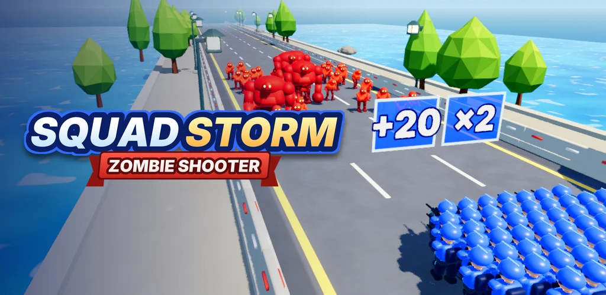
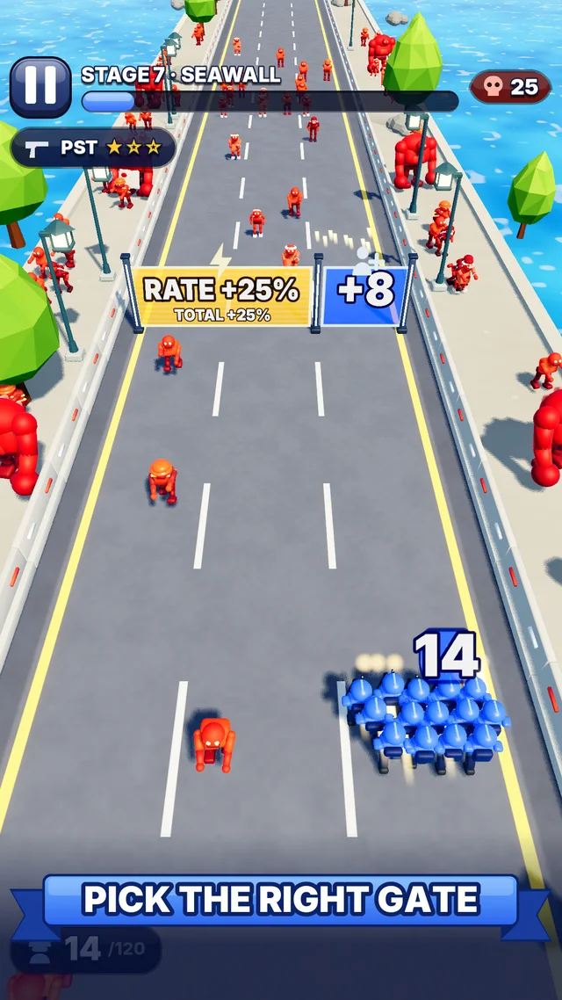
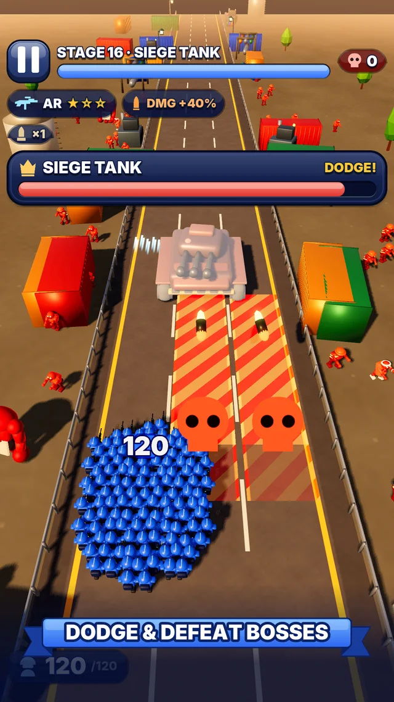
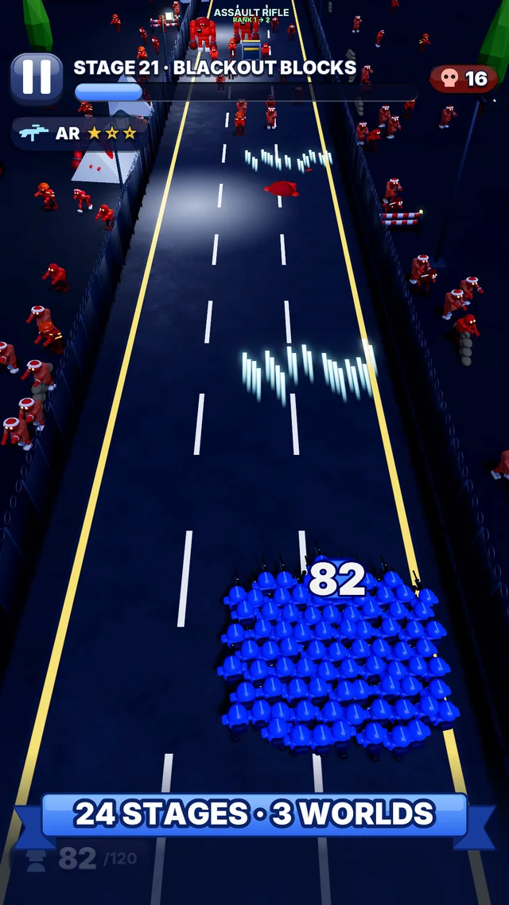

Grow your squad.
Crush the horde.
Drag left and right. Pick the gates that grow your army. Let your blue squad do the shooting.
Squadstorm: Zombie Shooter is a portrait arcade game by Kevin Mok, with 24 stages, six weapons, and three zombie bosses.
Coming to iPhone and Android.
Explore the gameplayOne swipe. A bigger fight.
Actual gameplay captures from Squadstorm.


Choose your gates
Shoot blue gates to raise their numbers before you run through. Steer clear of the red skull gates.


Take on the bosses
Dodge the lane warnings, find an opening, and fight back with weapons from pistols to rocket launchers.


Keep the run going
Fight through three chapters, push further in Endless mode, or take on the Daily Challenge.
Your squad.
Your pace.
The core game plays offline. No account, energy, or timers.
Progress and records stay on your device. Optional rewarded ads can revive a run or boost coins; ads require an internet connection.
Read the privacy policyNeed a hand?
For questions, feedback, or help with Squadstorm, contact Kevin Mok. For a game issue, include your device, app version, and what happened.